Туреччина та її краєвиди

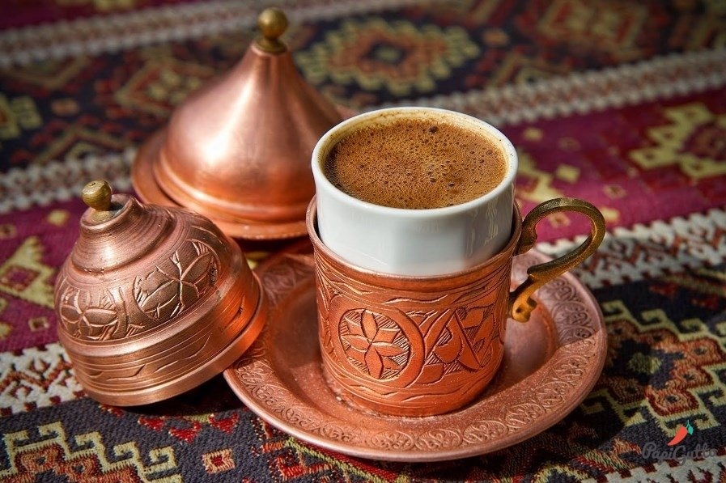
Національна кухня Туреччини, як і частина турецької культури, увібрала в себе страви багатьох народів, що жили на території країни в давнину.
Kahve, традиційна турецька кава. Мелені зерна змішують з цукром. Коли кава досить міцна, її розливають у мініатюрні кухлі без ручки. Каву подають трьома способами: секралі (дуже солодка), орте (мінімум цукру) і саде (гірка). Донер Кебаб прийнято подавати в лаваші, додаючи до нього салат.
Турецька кава – це не просто напій, а справжнє мистецтво і частина культури Туреччини. Ця кава має свою багату історію і унікальний спосіб приготування, що робить її відмінною від інших видів кави. У Туреччині, пиття турецької кави відіграє особливу роль у передбаченні майбутнього. По закінченню випивання кави залишки меленого кофе в чашці залишаються на дні. Ті, хто знає мистецтво читання "фальши", можуть прочитати майбутнє в цих забарвленнях і формах. Це називається "Турецькою кавоманією" або "Чашкою фортуни".
Цей обряд часто використовують під час осінніх та зимових свят, дім заповнюється ароматом кави, і гості весело спілкуються, обговорюючи розшифровку символів в чашці. Чашка турецької кави може розповісти вам багато цікавих речей про ваше майбутнє і приховані таємниці.
Цікава традиція Туреччини – чай. Його подають у маленьких тюльпаноподібних скляних стаканчиках, які мають спеціальну оправу, щоб не обпекти руки, оскільки чай подається, мабуть, надмірно гарячим.
У Туреччині виготовляють чорний листовий чай, який практично відрізняється особливо високою якістю. Однак з нього готують відмінні настоянки з ледве відчутним солодкуватим смаком. Кажуть, цей турецький чай дуже схожий на традиційний грузинський напій.Крім чорного листового чаю, Туреччина також славиться своїми трав'яними чаями.
Особливою популярністю як у місцевих жителів, так і у туристів користуються чаї з яблуком, шипшиною або квітками липи. А чай з шавлії взагалі вважається найпопулярнішим у всьому Середземномор'ї. Навіть коли на вулиці +40, ви побачите турків, які п`ють гарячий чай. Турецькі люди вкладають великий рівень смакових якостей у свій чай, і часто його подають разом з турецькими солодощами, такими як локум (турецький рахат-лукум) або баклава. Це робить чай в Туреччині не просто напоєм, а справжнім об'єктом культури та гостинності.
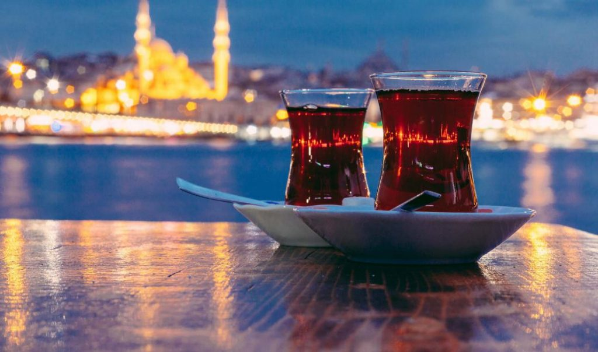
Неймовірна Турецька кухня
Турецька кухня - це справжнє смачне пригодництво для гурманів, які цінують різноманітність та багатство смаків
Харчування є одним із ключових елементів східних культур. Турецька кухня є однією з найбагатших на смаки страв у світі. Деякі секрети страв можуть навчитися навіть іноземці, а інші можуть готувати дуже досвідчений кухар. Це цікаво що в кожному регіоні є свої традиційні страви. Всупереч думці, що східна кухня дуже гостра, спеції вживаються в помірних кількостях. Окремим плюсом буде те, що багато страв є і для вегетаріанців - турецькі страви різноманітні і готуються не тільки з м'ясом, але і з багатьма овочами, фруктами і всілякими крупами.
Турецька кухня славиться своєю різноманітністю, смаками та історією. Ось кілька цікавих фактів про неї:
- Кебаб - символ Турецької кухні: Туреччина відома своїми смачними кебабами, існує багато видів цього страви. Найпопулярнішими є шашлик (shish kebab), адана кебаб і іскендер кебаб. Важливою частиною приготування кебабів є використання маринадів і спецій, які роблять ці страви неперевершеними.
- Ролики Гіре: Ролики Гіре (Gözleme) - це тонкі пляцки з начинкою, які можуть бути різними смаками, включаючи картоплю, шпинат, сир та інші інгредієнти. Їх зазвичай готують жінки на вулицях Туреччини, використовуючи традиційні методи..
- Величезний вибір солодощів: Турецька кухня славиться своїми солодощами, такими як баклава, локум, турецька донер кебаб. Турки також виробляють і величезний вибір солодких печив, які називають "kurabiye".
- Спеції та трави: Турецька кухня використовує багато ароматних спецій та трав, таких як імбир, кумин, кардамон, м'ята і багато інших. Ці інгредієнти надають стравам характерний смак.
- Розширення географії: Велика частина сучасної Турецької кухні вплинула від сусідніх країн і культур, таких як Греція, Близький Схід та Середземномор'я. Це робить турецьку кухню різноманітною і цікавою з культурної точки зору.
- Збереження старовинних рецептів: Турецька кухня є однією з культур, яка дуже цінує та зберігає старовинні рецепти та традиції. Багато страв приготовлюються за традиційними рецептами, переданими від покоління до покоління.
Турецька кухня
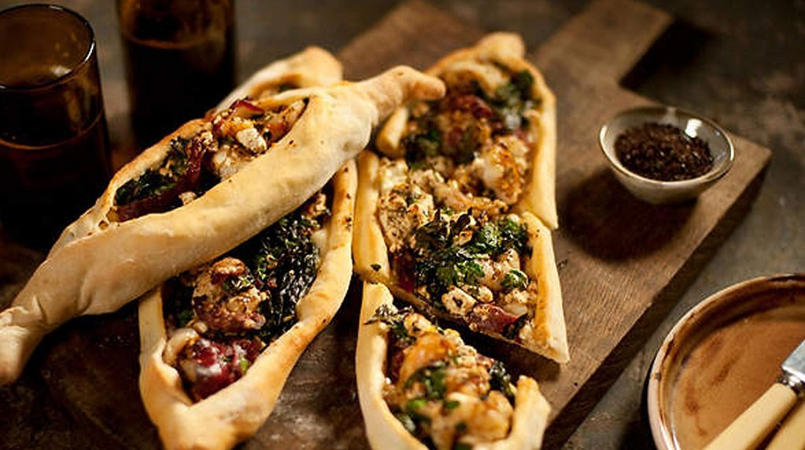
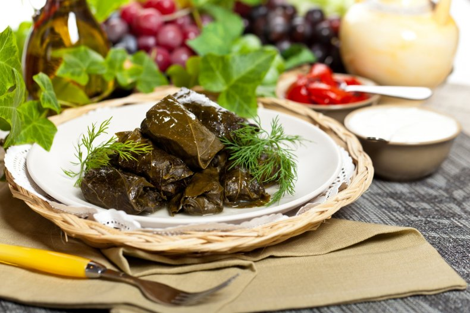
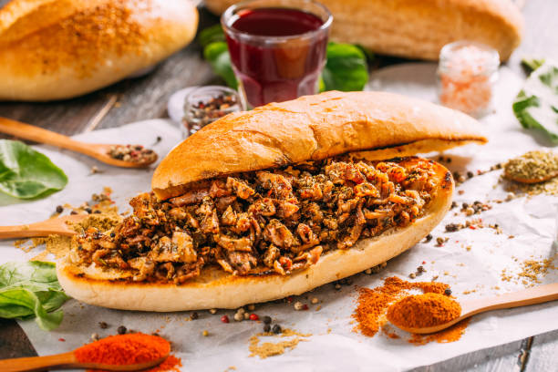
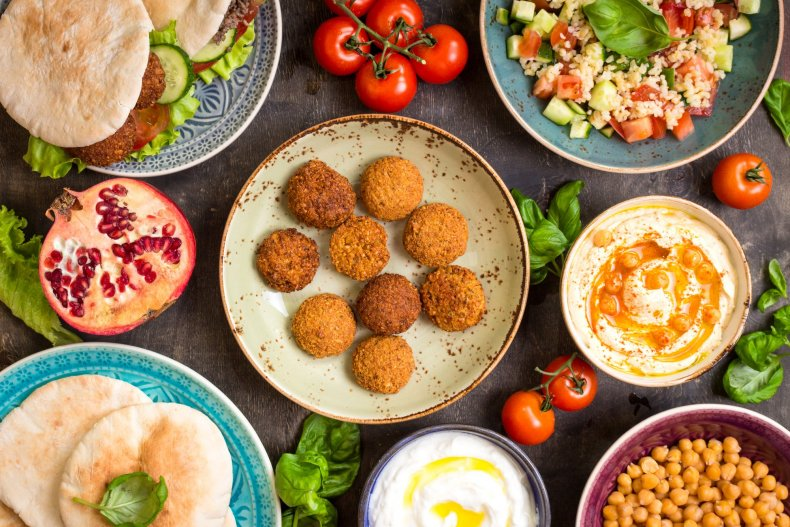
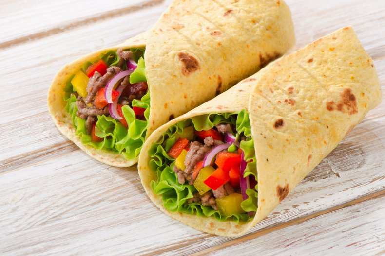

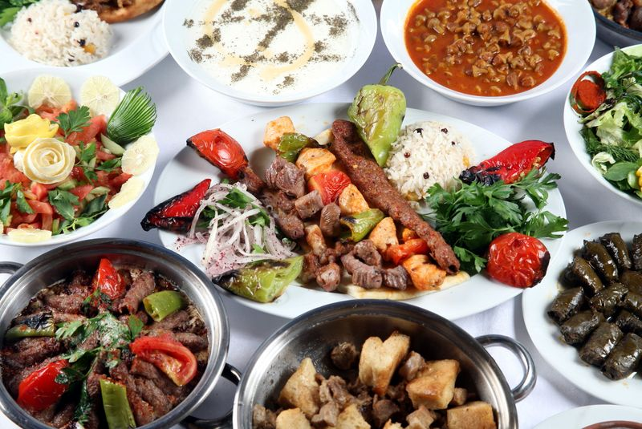
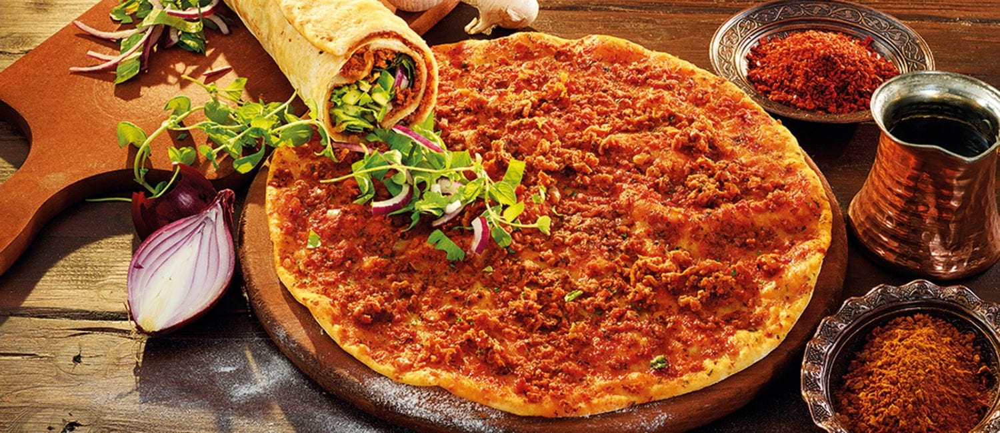
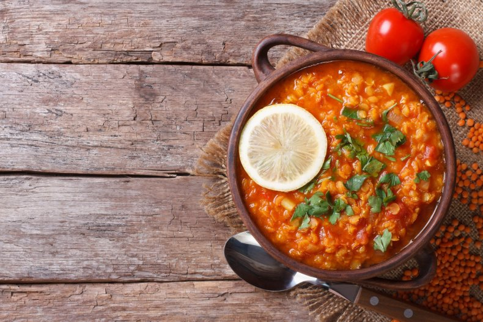
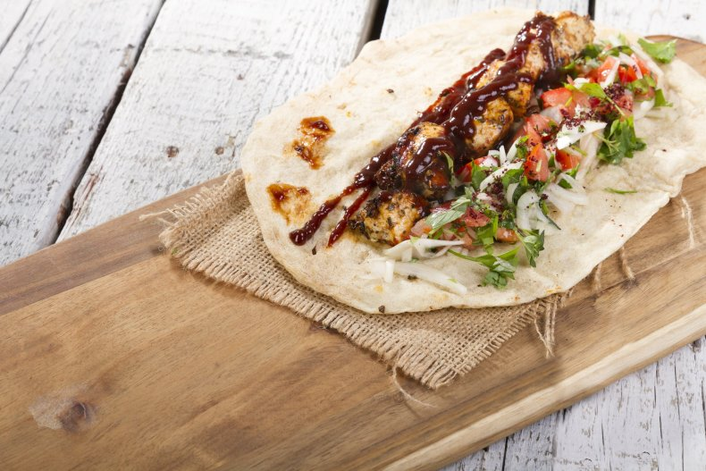
Турецькі солодощі
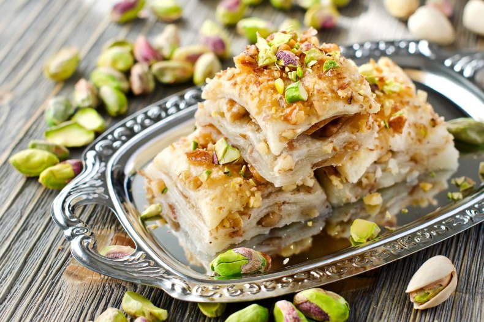
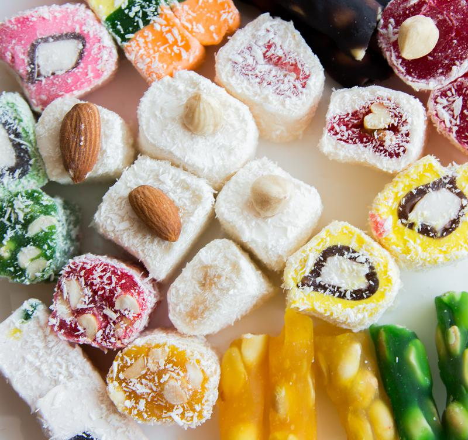
Особливе значення в турецькій кухні надається ласощам. Вони мають особливі екзотичні назви. Найвідоміша з ласощів - баклава (пахлава), але смачні також «ханімгебей», зацукровані каштани, лукум і халва. «Султанським десертом» вважаються зварені в сиропі шматочки тіста, посипані тертими волоськими горіхами і залиті густими вершками. Фаршировані персики, пудинг, свіжі фрукти подають круглий рік.
Солодощі в Туреччині мають довгу історію і багатий культурний спадок. Вони виникли внаслідок впливу різних цивілізацій, які відзначалися на території сучасної Туреччини протягом тисячоліть. Серед таких цивілізацій можна вказати греків, римлян, персів, арабів та інших.
Однією з ключових інгредієнтів в багатьох турецьких солодощах є мед, який завжди був доступним в регіоні завдяки його плодючим гірським землям і багатству квітів. Також належить відзначити використання горіхів, сухофруктів і спецій, що надають солодощам багатий смак та аромат.
Солодощі в Туреччині є не просто ласощами, а справжнім мистецтвом. Вони виготовляються вручну, з використанням передових методів, спадщини і рецептів, що передаються від покоління до покоління. Іноді процес приготування може бути складним і вимагати багато часу та терпіння.
З першого погляду зрозуміло – у Туреччині люблять десерти. Тут їдять солодке після обіду і замість нього, з кавою чи вином, вранці чи ввечері. Солодощі тут різні, але всі мають щось спільне – вони нереально смачні. Пропонуємо список найбільш популярних турецьких десертів, які варто спробувати самим та взяти у подарунок друзям.
Одні з найсмачніх солодощів є:
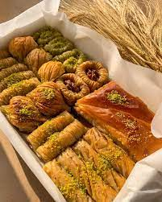
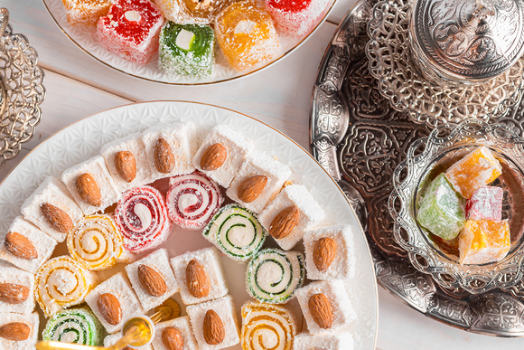
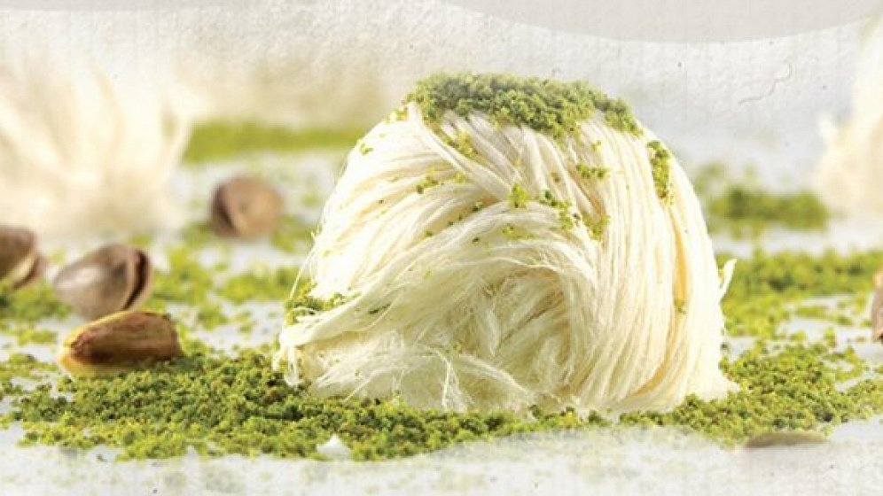
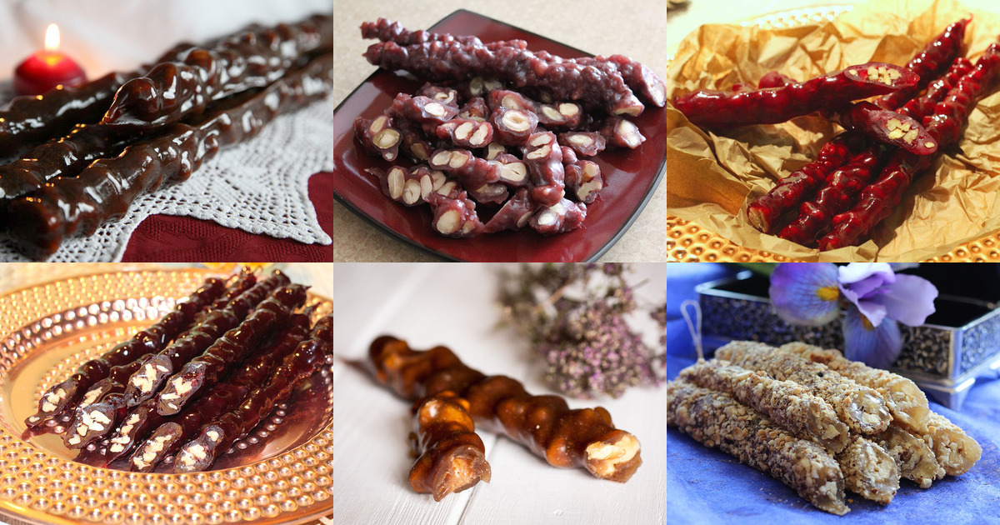
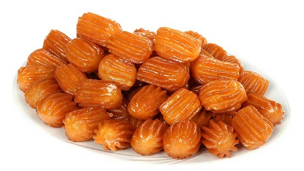
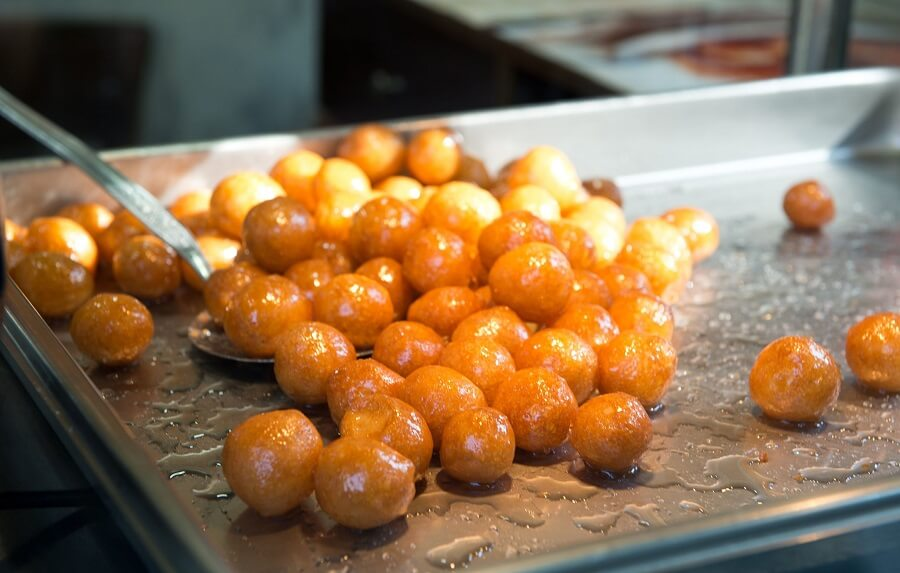
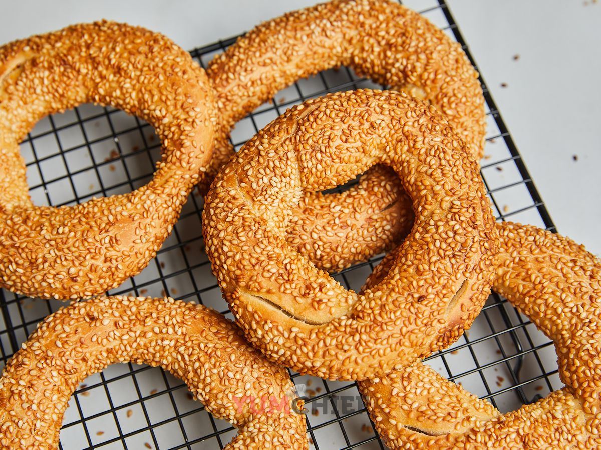
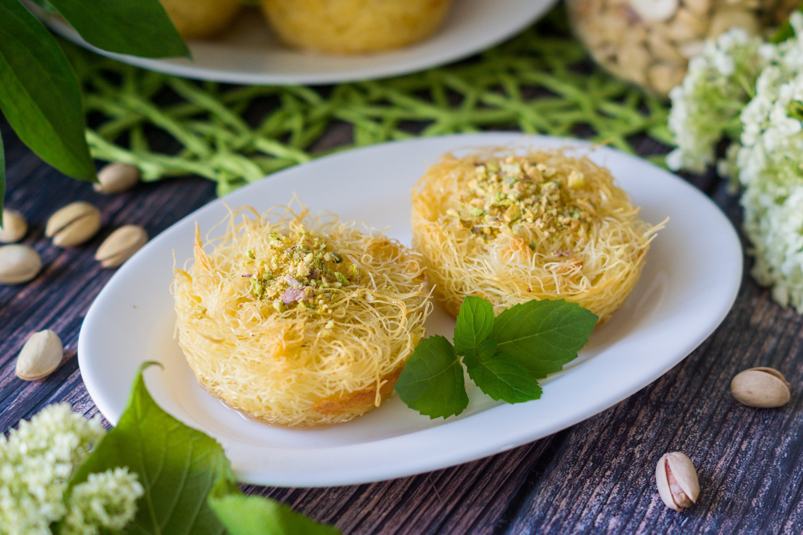
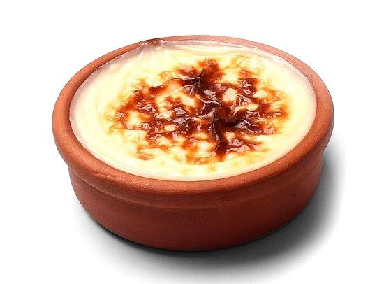
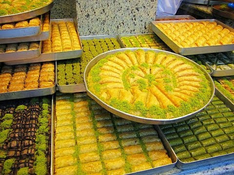
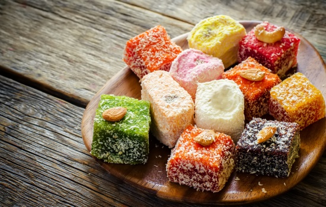
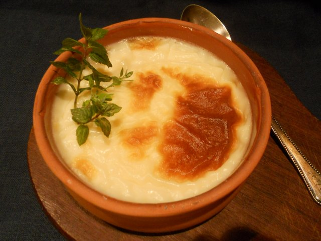
- Пахлава
- Рахат лукум
- Пішманіє
- Джевізлі суджук
- Тулумба
- Локма
- Сіміт
- Кюнафе
- Сутляч
- Шам-ел-нессім
Уявіть собі нереально м’яку хмаринку тіста, що просочена медом та присипана хрусткими горішками. Це і є пахлава, яку майстерно готують не тільки турки, але й греки та араби. Проте саме Туреччина вважається батьківщиною пахлави. Пахлава - це десерт, який часто подається на святкових та особливих випадках в Туреччині, включаючи весілля, святкування та релігійні свята. Вона також є популярним сувеніром для туристів. Цей солодкий десерт є символом турецької кухні та гостинності.
Цікавий факт: До речі, перший рецепт пахлави датується 1473 роком. Вперше страва з такою назвою була записана у кухонну книгу головного турецького палацу Топкапи. З тюркської «пахлава» означає «горіхи».
Не тільки у Туреччині, але й у деяких магазинах України можна побачити величезні таці з різнокольоровими кубиками. Турки не уявляють повсякденного життя без кави зі шматочком лукуму. Назва "рахат лукум" перекладається з турецької як "солодкість, яка робить щасливим." Цей десерт відомий не лише в Туреччині, але і в багатьох інших країнах Близького Сходу та Середземномор'я. Він має величезну популярність в усьому світі та є символом гостинності в турецькій культурі. Рахат лукум часто подається на чайному столі разом із турецьким чаєм.
Цікавий факт: Кажуть, що ці «шматочки насолоди» вперше приготував кухар Бекір Ефенді для 17 дружин султана Абдула-Хаміда II. Мета турецького правителя була простою – підняти настрій своїм коханим чимось смачненьким та відволікти їх від постійних чвар. Перший рахат лукум був виготовлений із цукру, крохмалю та рожевої води. Зараз рахат лукум має різні смаки – медовий, полуничний, апельсиновий та інші.
Пішманіє має й іншу назву – «тіль хельва». Для українського гурмана пішманіє буде схоже на щось середнє між класичною халвою та цукровою ватою. Цей десерт виготовляють із підсмаженого борошна та цукрового сиропу. Іноді до цих інгредієнтів додають горішки. Із солодкої маси формують кульки, а іноді кубики. Перший рецепт пішманіє датується аж 15 століттям. Деякі історики вважають, що турки рецепт цього десерту запозичили у персів. Сьогодні безліч туристів купують пішманіє у Туреччині, щоб подарувати своїм рідним та друзям.
Пішманіє - це солодкість, яка часто зустрічається в Туреччині і має своє особливе місце в турецькій кухні. Ця страва виготовляється зі згущеного цукрового сиропу та вершкового масла, які збиваються разом і обмотуються навколо тонких ниток тіста. В результаті отримується ніжний і легкий десерт, який топиться в роті. Пішманьє - це справжній лакомий десерт, який може бути знайдений у численних місцях, включаючи базари та солодкі магазини в Туреччині. Він популярний як серед місцевих жителів, так і серед туристів, які бажають спробувати аутентичні страви турецької кухні.
Цікавий факт: Назва "пішманьє" походить від турецького слова, яке означає "я шкодую" або "я шкодую, що їв." Такий незвичайний вибір назви свідчить про те, наскільки цей десерт може бути солодким і споживають його з обережністю через його високий вміст цукру та калорій.
Інша назва цього популярного десерту – чурчхела. Насправді, популярна ця «солодка ковбаса» не лише у Туреччині, а й у Греції, Вірменії та Грузії. Виготовляють суджук зі згущеного фруктового соку та борошна із додаванням горіхів, родзинок або сухофруктів. Різновидів цієї солодощі безліч, а купити її можна у будь-якому магазині чи кафе Туреччини.
Джевізлі суджук - це відомий турецький десерт, який також називається "червоний суджук" через його схожість з відомим турецьким сухарем суджук, хоча вони не мають спільного походження. Цей десерт виготовляється з суміші меду, горіхів (зазвичай горіхи та фісташки) і різних спецій, надаючи йому характерний смак і аромат.
Цікавий факт: Слово "джевізлі" у назві десерту означає "горіховий". Джевізлі суджук є популярним солодощем в Туреччині, і його виготовлення має довгу історію. Цей десерт часто подається на святкових заходах і став символом традиційної турецької кухні. Він також популярний серед туристів, які шукають солодкі страви з багатим смаком та ароматом Туреччини.
На вигляд тулумба нагадує невелику булочку. Насправді це дуже солодкий десерт, виготовлений із заварного тіста. Часто тулумбу подають на сніданок у турецьких готелях. Можна також замовити у кафе чи купити на турецькому базарі.
Цікавий факт: Тулумба має цікаву історію та популярності. Це - це турецький десерт, який має своє походження у великій Османській імперії. Слово "тулумба" в перекладі з турецької означає "розцвітати" і це десерт можна було знайти на святкових обідах і заходах у Османському дворі. Тулумба виготовляється з тіста в формі тонких трубочок або гніздечок, які фритюрються і пересипаються сиропом або медом.
Локум - це м'який та желе-подібний солодкий десерт, зазвичай виготовлений з цукру, крохмалю та різних ароматизаторів. Він часто має різні начинки, такі як горіхи, фруктові або квіткові аромати.Це невеликі кульки із тіста, вкриті солодким соусом. Віддалено нагадують пончики, але дуже дрібні, хрусткі.
Цікавий факт: Локум був винаходом в Стамбулі у XVIII столітті та був призначений для султана. Він став популярним десертом у всьому світі після того, як Чарльз Діккенс привіз його в Англію.
Сіміт - це популярний турецький вид вуличної їжі, який також називається "сіміт-сіміт." Ця страва виготовляється з дріжджового тіста та має кілька смакових варіацій. Сіміт має характерну вигляд, схожий на багатогранну зірку чи кільце, і часто приправляється сиром, кунжутом або іншими начинками. Цей хрусткий десерт можна знайти на вулицях і базарах у Туреччині, і він є популярним снеком серед місцевих жителів і туристів.
Цікавий факт: Слово "сіміт" (simit) походить від арабського слова "самид", яке вказує на схожість смаку цього десерту з хрусткою скоринкою та ніжним серединним шаром.
Кюнафе - це солодка страва, яка складається з тонких намистинок тіста, які заповнюються сиром та пересипаються солодким сиропом. Зазвичай вона готується в спеціальних мідних чи залізних пательнях.
Цікавий факт: Кюнафе - це популярний десерт як в Туреччині, так і в Палестині та багатьох інших країнах Близького Сходу. В різних регіонах вона може мати різні варіації та начинки.
Сутляч - це турецький розсирний десерт, схожий на рисовий пудинг. Він приготовлюється з рису, молока, цукру та ванільного екстракту, і має кремову консистенцію. Сутляч подається з корицею та горіхами, що надає йому характерний смак.
Цікавий факт: Цей десерт є популярним у всій Туреччині та входить до складу багатьох турецьких родинних обідів. Він також зазвичай подається в традиційних глиняних посудинах для більш аутентичного смаку.
Шам-ел-нессім - це турецький десерт, який традиційно приготовлюється для свята "Шам-ел-нессім," яке відзначається в Туреччині 6-го травня кожного року. Десерт складається зі стиглих пшеничних зерен, кокосової стружки, апельсинового цукру та солодкого сиропу. Він має легку та освіжаючу текстуру.
Цікавий факт: Свято "Шам-ел-нессім" має своє коріння в традиціях стародавнього Єгипту та відзначає початок літа. Десерт Шам-ел-нессім - це символ весняного пробудження та нового початку.
Як бачите, Туреччина – це рай для ласунів та ласунок.
Приїжджайте та куштуйте оригінальні східні солодощі
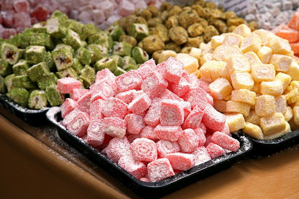
Турецькі солодощі
Туристи, завідуючи Туреччиною, полюбляють солодощі за їх смак, аромат, і яскравий зовнішній вигляд. Це частина турецького гостинності, важливого елементу традиційної культури. Також місцеві солодощі часто подаються на святах і релігійних урочистостях, що робить їх ще більш особливими для туристів, які бажають поглибити своє розуміння турецької культури. Усе це робить турецькі солодощі популярними та цікавими для мандрівників і гурманів, які завітали до Туреччини.
А купити солодощі з Туреччини ви можете тут!